Instrucciones de la instalacion.
Link para ver instrucciones desde Vercel.
mobile_App_CaraB
Link para descargar el instalador de Google Drive.
QR Code para escanear con App "Expo Go" para descargar el instalador .apk desde EAS.

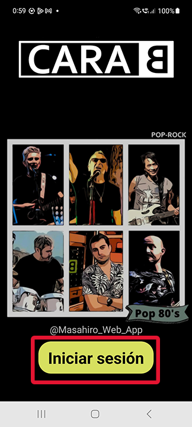
Pulsando al boton "Iniciar Sesion" y pasa a Log-in page.
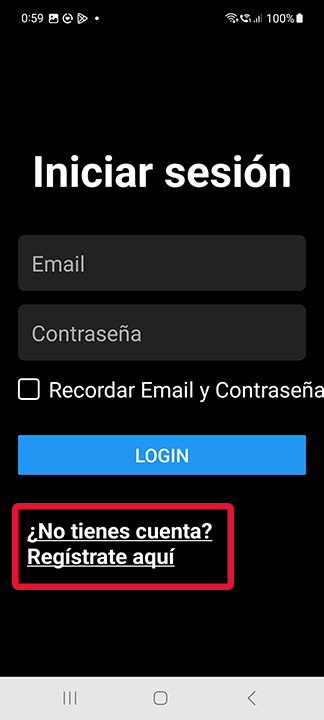
Si es la primera vez, es necesario registrarse.
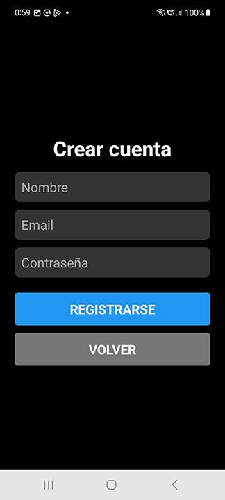
Al registrar con el correo,te dara confirmacion del registro. Sera mejor dejar apuntado en elgun sitio seguro tus datos.
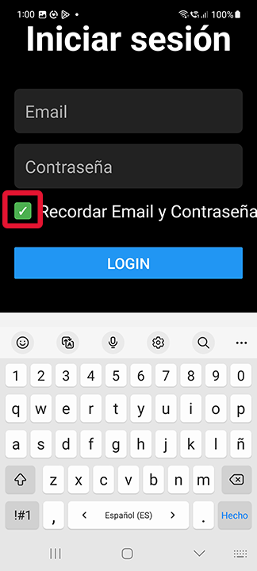
La primera vez que inicies sesion, es mejor dejar marcada la casilla de "Recordar....". Asi evitas teclear cada vez que abras la app.
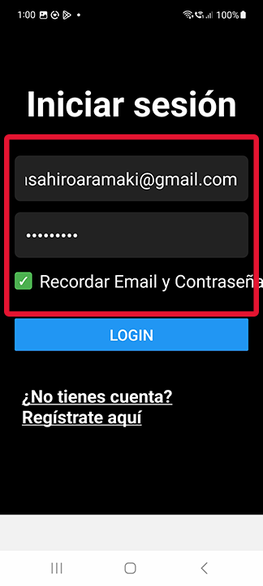
Tus datos estaran guardados en el Storage de tu telefono. La proxima vez que entres, solo haces un Tap a cualquiera de estas 2 casillas.
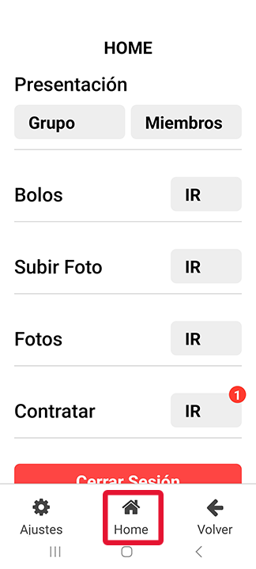
Es la pagina principal. El icono de "Home" casi siempre estara alli. Para cerrar sesion es el boton rojo que esta abajo.
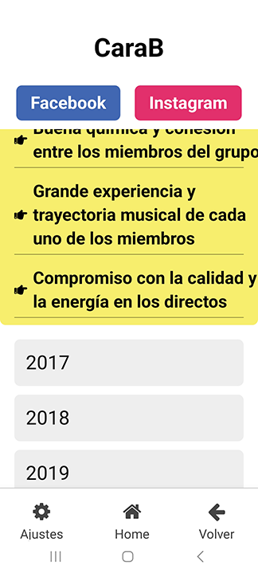
Vemos la pagina de CaraB(Presentacion-->Grupo). Las fotos que estan alli son alargables. "Tap" y saldra una ventana modal. "Pinch out" --->Zoom. Con pulsar "X",se quita la ventana.
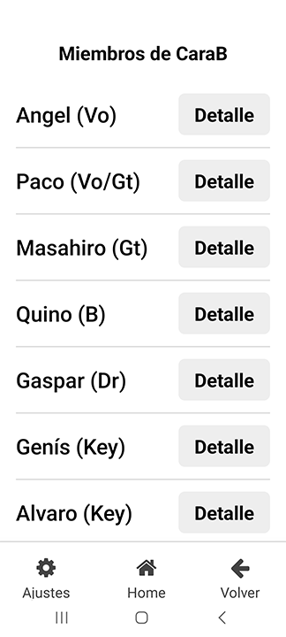
Pagina(s) de los miembros de CaraB(Presentacion-->Miembros). Las paginas individuales(Detalle) solo tiene "<--" para poder volver. Alli no existe el icono de Home.
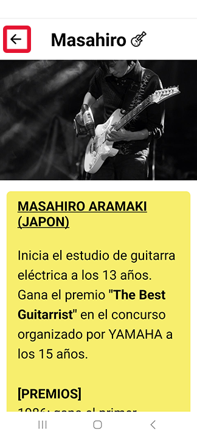
Estas paginas individuales son eternamente "Scrollables"!!
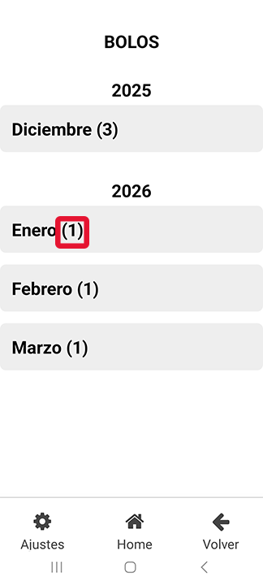
Pagina de Bolos Confirmados. Al hacer Tap a un mes, se abre. Los numeros puestos en ( ) son la cantidad de filas(bolos) que hay en ese mes.
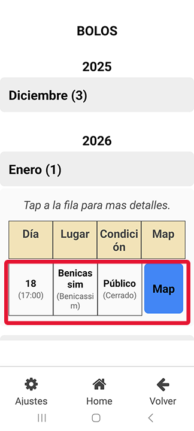
Al hacer Tap a una de las filas, se abre Tarjeta de detalles del bolo. Al hacer Tap al cuadro "Map", te lleva a Google Maps con precision al escenario.
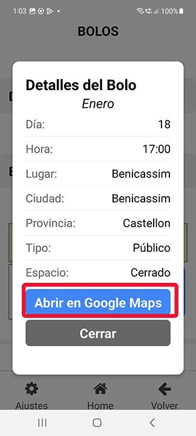
Tarjeta de detalles y Google Map.
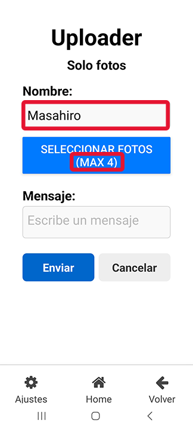
Pagina de subir fotos del bolo. El nombre estara puesto automaticamente conforme entraste al App aunque si quieres, pudes cambiar del nombre. Solo se permite subir 4 fotos. Los videos no te dara ni opcion(No te dejara elegir).
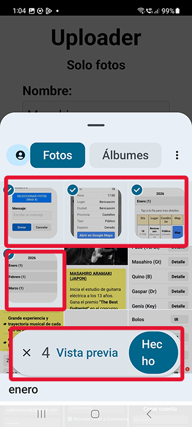
Acabo de elegir 4 fotos de Screen Shoot del App. Pulsa al boton "Hecho" volvera a la formula para acabar de rellenar informaciones con 4 fotos elegidas por ti.
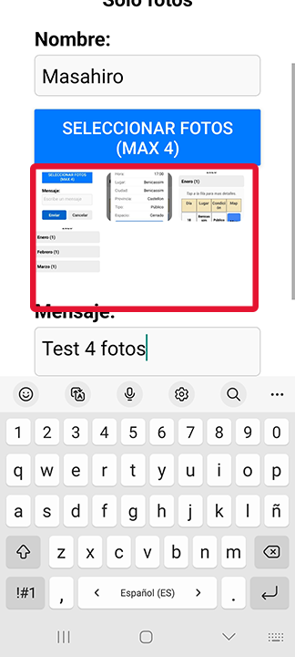
No es necesario, pero si quieres escribes 4 palabras.
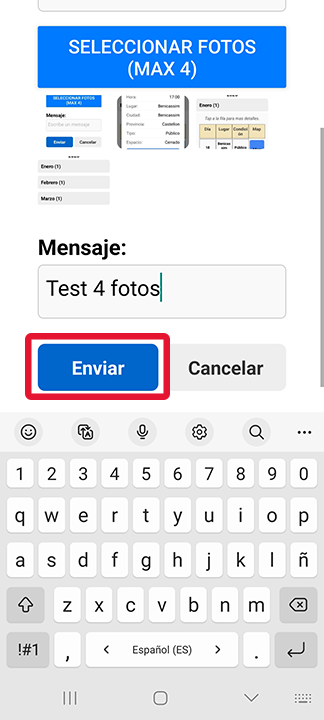
Al pulsar el boton "Enviar", tus informaciones iran a la Base de Datos. Podria tardar un poco.
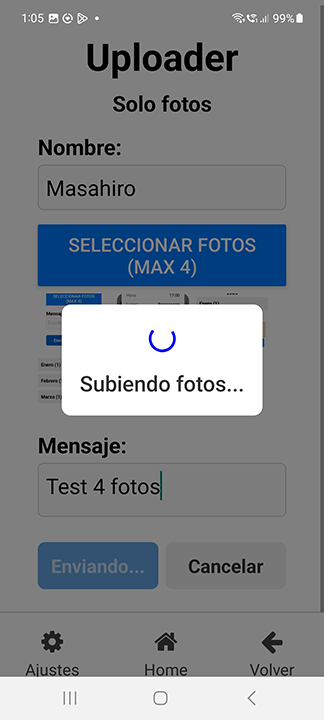
Uploading....
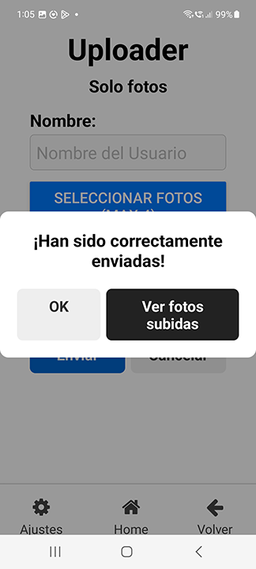
Ya esta. O pulsas OK y te quedas alli o pulsas "ver fotos...." y vas a otra seccion para ver lo que acabas de enviar.
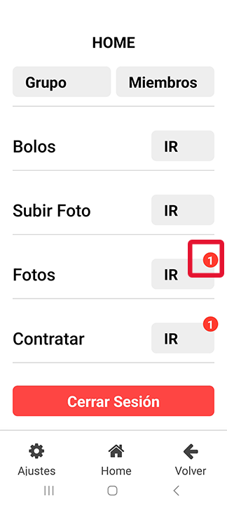
Como ves que si has subido foto(s), te indica que hay una novedad en la pagina de "Fotos"(Fotos-Subidas).
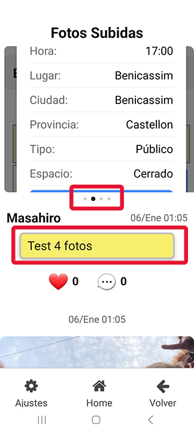
Acabo de subir 4 fotos y tiene sistema de navegacion de imagenes horizontal(Te sera muy familiar el diseño...). Alli puedes poner "Like" o unos mensajes sobre la foto.
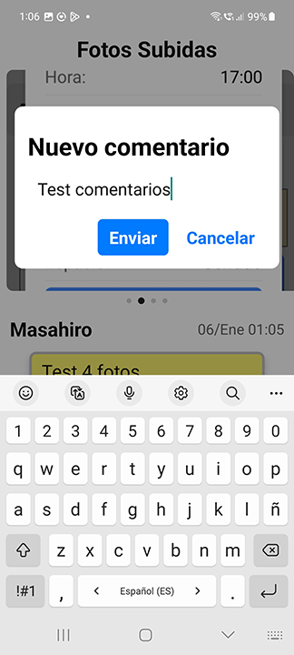
Escribiendo mensaje...y esperar un poquito...
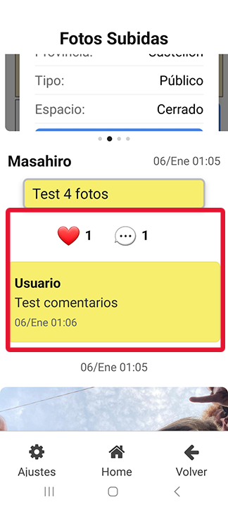
Y el resultado es esto.
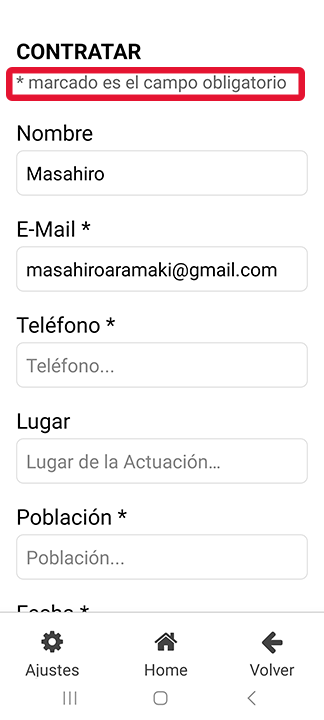
Pagina de contratacion. Los que quieren "negociar" con CaraB, Solo tienen que rellenar campos obligatorios.
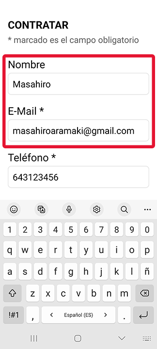
Nombre y E-Mail es autorellenado por la informacion de Login page.
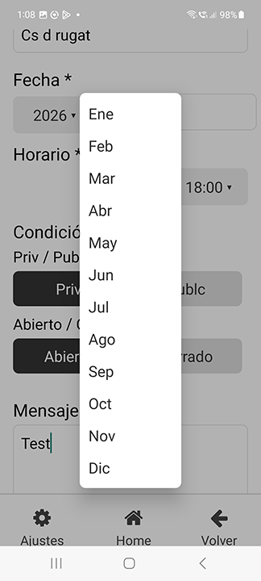
Casi todas las casillas son selectibles.
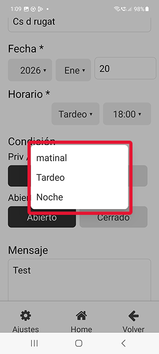
Aqui cada horario(Matinal,Tardeo....) tiene una hora de empezar el bolo con logica. Aunque NO es muy preciso, con saber sobre a que hora sera suficiente de momento.
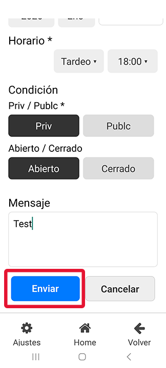
Cuando nos avisa la noticificacion, llamariamos o escribiriamos un e-mail.
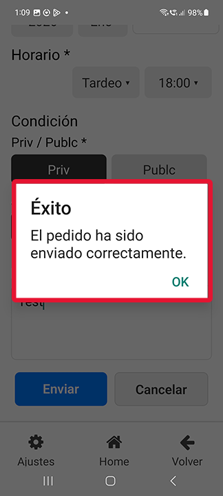
Gracias!!!
Link para ver instrucciones desde Vercel.
Link para descargar el instalador de Google Drive.
QR Code para escanear con App "Expo Go" para descargar el instalador .apk desde EAS.